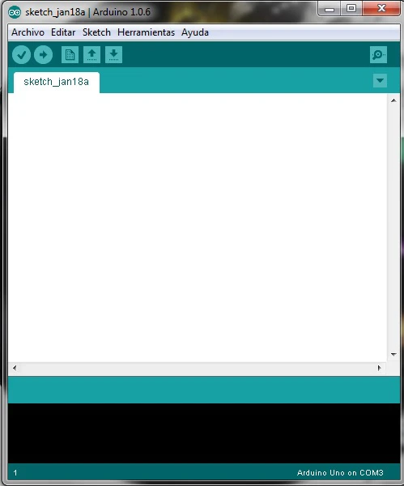
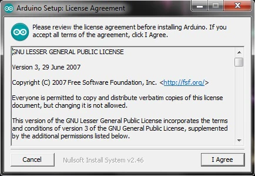
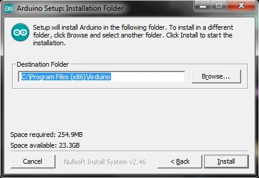
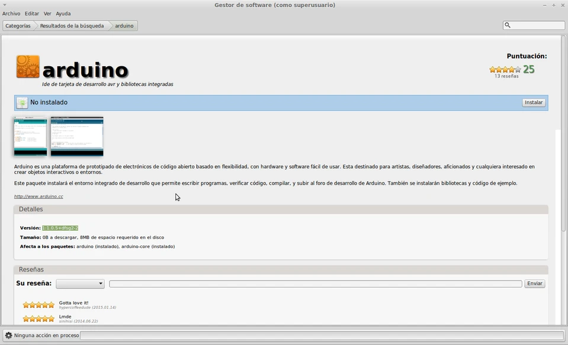
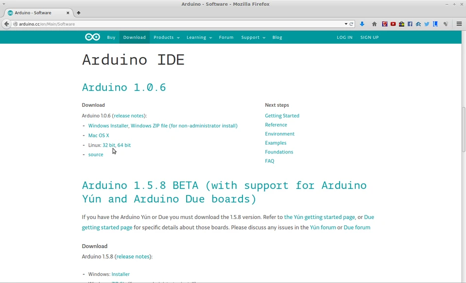
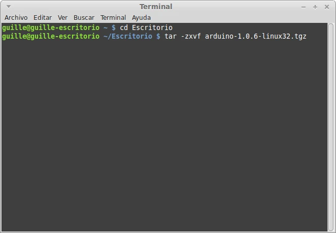

¿Qué es y para qué sirve?
Dado que el Arduino es como un pequeño ordenador que ejecuta una serie de códigos que previamente le hemos introducido, necesitaremos un programa para poder meter estos códigos a la propia placa. Este programa se llama IDE, que significa "Integrated Development Environment" ("Entorno de Desarrollo Integrado"). Este IDE estará instalado en nuestro PC, es un entorno muy sencillo de usar y en él escribiremos el programa que queramos que el Arduino ejecute. Una vez escrito, lo cargaremos a través del USB y Arduino comenzará a trabajar de forma autónoma.

Descarga e instalación
Para instalar este IDE en vuestro sistema operativo solo tendréis que seguir unos sencillos pasos:
- Descargar el programa gratuito "Arduino IDE" de su propia página web. Podéis hacer clic en este enlace o dirigíos en la web de Arduino a la sección de descargas.

-
Hacéis clic en vuestro sistema operativo, después en guardar archivo y lo descargáis.
-
Instalación en Windows: (si vuestro sistema operativo es Linux podéis saltar al siguiente punto)
Una vez descargado lo ejecutáis y podréis ver la siguiente ventana.

Ilustración 3 Aceptación de condiciones.
Pulsamos en "I Agree". En este cuadro dejamos todas las opciones marcadas, pero hay que prestar especial atención a la opción de instalar los USB driver, ya que esto es muy importante para que la placa Arduino se pueda comunicar con el PC. Pulsamos en Next e Install.

Ilustración 4 Selección de opciones de instalación.

Ilustración 5 Selección de carpeta de instalación.
Y esperaremos que termine de instalar (si pregunta si deseamos instalar el software Arduino USB le damos a instalar).
Ilustración 6 Proceso de instalación.

Una vez terminado el proceso, hacemos clic en Close y ya tendremos el IDE instalado en nuestro PC.
- Instalación en Linux
Hay dos formas de hacerlo:
- A. En distribuciones como Ubuntu y derivados (Lubuntu, Linux Mint...) se puede instalar desde los repositorios al menos desde la versión de Ubuntu 14.04 (17 para Linux Mint) estando disponible Arduino-1.0.5. Para instalar, abrimos el Gestor de paquetes Synaptic o el Centro de Software y buscamos Arduino

Ilustración 7 Gestor de software de Linux Mint
Pulsamos instalar y empezará el proceso de descarga e instalación.
Si aún tienes más suerte y cuentas con Arch como distribución de linux o con una de sus derivadas (Arcolinux, Manajaro...) bastará con que ejecutes en la línea de comandos:
$ yay -S arduino
y se realizará el proceso de instalación del IDE.
- B. Descargando e instalando el paquete desde la web de Arduino.

Ilustración 8 Apartado de descargas de Arduino
Descargamos la versión 32 o 64 bits dependiendo del sistema operativo. Después abrimos terminal y nos vamos a la carpeta donde lo hemos descargado. En nuestro caso lo descargamos en el Escritorio así que usamos el comando "cd Escritorio".

Ilustración 9 Cambiando el directorio de trabajo
Una vez que estemos en la carpeta donde lo hemos descargado, escribimos el comando "tar -zxvf arduino-1.0.6-linux32.tgz". (En general es "tar -zxvf nombrearchivo.tgz")

Ilustración 10 Cambiando el directorio de trabajo 2
Después de pulsar intro, empieza la instalación que dura pocos segundos. Al finalizar podemos comprobar que se ha creado un directorio llamado arduino1.0.6 (o versión descargada). Entramos y tenemos un ejecutable llamado "arduino"

Ilustración 11 Captura explorador de archivos
Hacemos doble clic en ese archivo y, en la ventana que se abre, pulsamos "Ejecutar".
Entorno de programación y configuración
Al abrir el programa veremos cómo nos aparece la consola principal del IDE Arduino en la cual podemos ver las siguientes zonas:

Ilustración 12 Zonas del IDE Arduino
En la parte de menú tenemos una zona para acceder a funciones como carga de archivos, edición del texto del código, carga de librerías y ejemplos, configuración, herramientas…etc.
En los botones de acceso rápido tenemos los siguientes iconos:
 Verifica si tu programa está bien escrito y puede funcionar.
Verifica si tu programa está bien escrito y puede funcionar.- Carga el programa a la placa de Arduino tras compilarlo.
- Crea un programa nuevo.
 Abre un programa.
Abre un programa.- Guarda el programa en el disco duro del ordenador.
 (En la parte derecha de la barra de herramientas se encuentra el Monitor Serial) abre una ventana de comunicación con la placa Arduino en la que podemos ver las respuestas que nuestro Arduino nos está dando, siempre que tengamos el USB conectado.
(En la parte derecha de la barra de herramientas se encuentra el Monitor Serial) abre una ventana de comunicación con la placa Arduino en la que podemos ver las respuestas que nuestro Arduino nos está dando, siempre que tengamos el USB conectado.
En el cuadro del editor de texto escribiremos el código del programa que queramos que Arduino ejecute.
Finalmente, en el área de mensajes y la consola Arduino nos irá dando información sobre si la consola está compilando, cargando…y sobre los fallos o errores que se produzcan tanto en el código como en el propio IDE.
El siguiente paso que realizaremos será configurar nuestro IDE para que se comunique con nuestra placa Arduino. Para ello conectaremos nuestro Arduino mediante el cable USB al PC y después de que el sistema operativo haya reconocido e instalado la tarjeta automáticamente, nos dirigimos a la zona de menú , pulsamos en Herramientas y después en Tarjeta . Ahí seleccionamos el modelo de tarjeta Arduino que tengamos, en nuestro caso "Arduino Uno".

Ilustración 13 Selección de Tarjeta
Después vamos a la opción Puerto Serial y elegimos el COM en el que tenemos conectado nuestro Arduino.

Ilustración 14 Selección de puerto COM
Si nos aparecieran varios COM activos, porque estemos usando otros dispositivos serial o por otro motivo, para saber cuál de ellos es el que se comunica con nuestra placa, solo tenemos que irnos a Panel de control/Hardware/Administrador de dispositivos. Miramos la pestaña (Puertos COM y LPT) y ahí nos aparecerá nuestro Arduino y el COM en el que está conectado. Con esto, ya podemos empezar a programar nuestro Arduino.
Programa de testeo: "HELLO WORLD"
Para finalizar, probaremos que todo está correctamente instalado y configurado ejecutando nuestro primer programa, el más simple, el típico "HELLO WORLD" ("HOLA MUNDO"). Para ello solo tenéis que pegar el siguiente código en la zona del editor de texto del IDE Arduino:
void setup() {
Serial.begin(9600); // iniciamos el serial
pinMode(13, OUTPUT);// se declara pin 13 como salida
}
void loop() {
digitalWrite(13, HIGH); // se enciende el LED
Serial.println("HOLA MUNDO"); // Escribe por el monitor serial
delay(1000); // espera 1 segundo
digitalWrite(13, LOW); // se apaga el LED
delay(1000); // espera 1 segundo
}
Conectamos la placa Arduino al PC usando el cable USB y hacemos clic en el botón de cargar .
Si habéis seguido todo correctamente, podréis ver cómo el led de vuestro Arduino parpadea y si clicáis en el botón del monitor serialveréis como Arduino os está escribiendo "HOLA MUNDO".
Espero que os haya resultado fácil. En el próximo post veremos la estructura de un programa, las sentencias más comunes y realizareis vuestro primer ejemplo práctico.